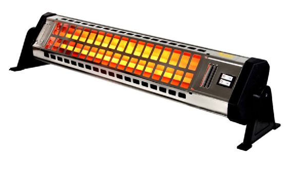
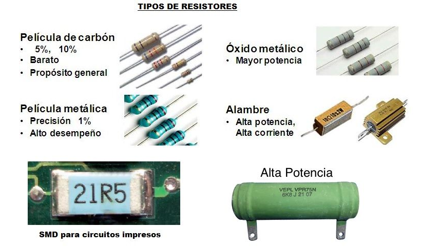
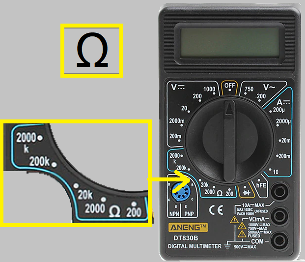
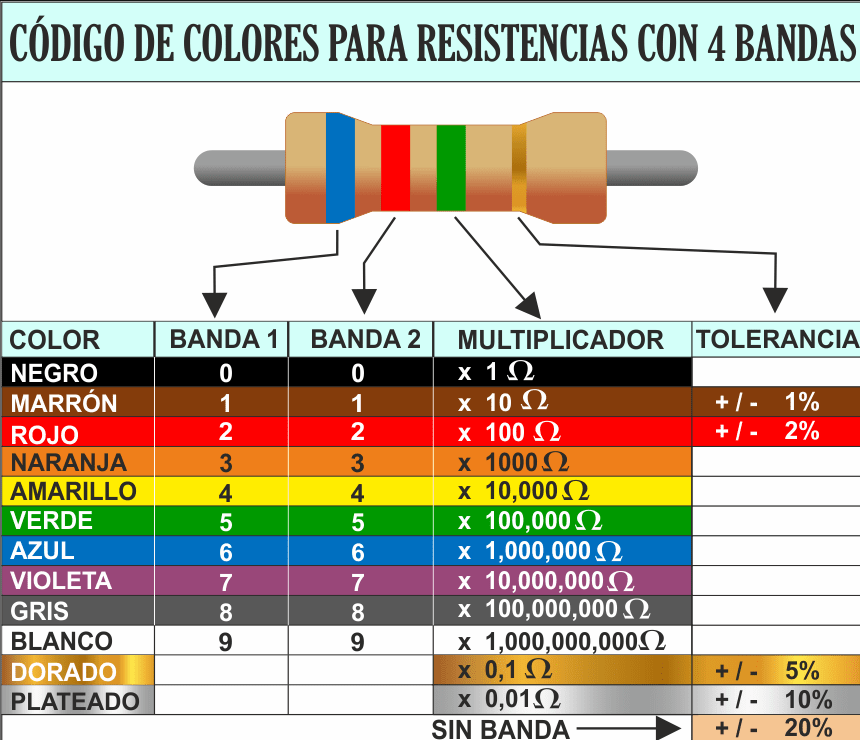
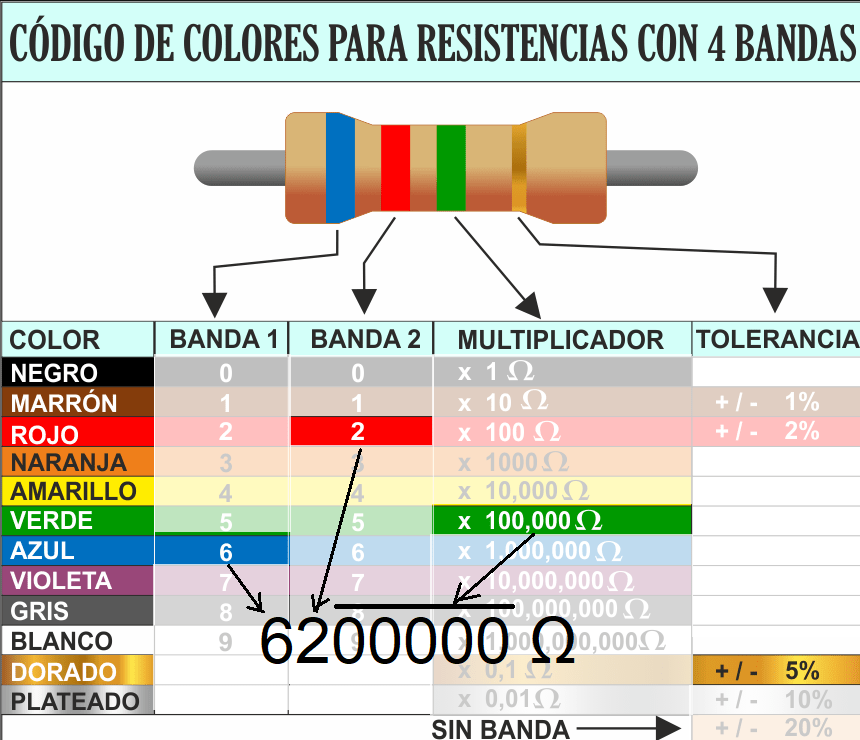

Las resistencias son dispositivos que convierten Energía eléctrica en calor. La finalidades del calor generado pueden ser varias, pero eso no incide sobre las propiedades instínsecas de las resistencias como su valor.

Calefactor eléctrico
(se aprecia la resistencia en color naranja)
En estos casos no es tan importante el valor de la resistencia sino su integridad. Pero la función de generar calor a partir de la electricidad no es la única función de las resistencias.
La resistencia como elemento de polarización o limitación de corriente
En tecnología electrónica, se utilizan las resistencias como elementos limitadores de corriente. Por ello, su valor es muy importante.
Por tal motivo, el valor de la resistencia siempre está expresado en el cuerpo del componente. Puede aparecer de manera explícita, codificada por código de colores o por código numérico.

Unidades de Resistencia, Múltiplos y Submúltiplos
Todas las magnitudes físicas, relacionadas con los circuitos, tienen unidades múltiplos y submúltiplos. La resistencia no es la exepción. Por eso brindamos a contínuación un cuadro comparativo de comparación de unidades.
Múltiplos
MegaOhm (Mohm): 1 Mohm = 1 000 000 ohms. Equivale a un millón de ohms.
KiloOhm (Kohm): 1 Kohm = 1 000 ohms. Equivale a mil ohms.
Submúltiplos
miliOhm (mOhm): 1 mOhm = 0,001 ohms. Equivale a la milésima parte de un ohm.
Conversión de unidades
La forma de convertir unidades son las ya vistas:
por razones y proporciones,
por función lineal o
por regla de tres simple (ver clases anteriores).
Conversión de unidades por sistema de ventanas
Se presenta una tabla de conversión con sistema de ventanas, similar al visto para unidades de tensión de generadores.
MegaOhm (Mohm)
KiloOhm (Kohm)
Ohm (ohm))
miliOhm (mOhm)
Instrumentos de Medida - El tester instrumento de medida de Resistencia
El téster también sirve para medir resistencia. Tiene un rango de escalas dedicado para este propósito.

Sector de Escalas destinado a medir resistencia
Procedimiento para realizar medición de resistencias
El procedimiento de medir resistencia, requiere una serie de pasos previos y precauciones, que deben ser tenidos en cuenta para, obtener una medida correcta y evitar dañar el instrumento.
Quite cualquier tipo de alimentación de energía al circuito. Esto equivale a decir, desconecte todos los generadores que puedan provocar una circulación de corriente.
Si la resistencia está conectada en un circuito, desconecte uno o los dos terminales para realizar la medición.
Ubique el sector de la escala del tester detinado a medir resistencia. Es el que tiene el idicador Ω.
Seleccione el rango más alto. En función de la presición deseada, disminuya el rango de la escala hasta lograr el valor deseado.
Conecte los terminales del tester a los terminales de la resistencia. En escalar altas (mas de 1 MΩ ), tocar ambos terminales de la reistencia con las manos puede afectar la lectura, por ello se recomienda no hacerlo.
Documente la lectura (anótela, para no olvidarla).
Valor de resistencias por codificación de colores
En tecnología electrónica, las resistencias tienen indicado su valor. Las formas de indicar el valor de las resistencias, a veces es explícita, a veces está indicado con una codificación de colores.
El código de colores utilizado para indicar el valor de las resistencias y de algunos otros componentes, se expresa en la siguiente tabla:

Código de Colores de Resistencias
Para realizar la lectura del valor de las resistencias se debe proceder de la siguiente forma:
Registre el dígito correspondiente al color de la primera banda
Registre el dígito correspondiente al color de la segunda banda.
Multiplique por diez elevado a la potencia codificada por el color de la tercera banda. Cuando las resistencias son mayores a 10, equivale a agregar a la derecha de los dígitos registrados una cantidad de ceros que coincide con el valór numérico codificado
Calcule el porcentaje de error o "tolerancia" del componente.

Procedimiento de Lectura
Práctica
Identificación y comprobación de resistencias de equipos domésticos destinados a calefacción de cualquier tipo.
Identificación de resistencias como componentes electrónicos.
Identificación de valores de resistencias y equivalencias entre múltiplos y submúltiplos.
Utilización de Téster para comprobación de resistencias.
Utilización de tabla de codificación de valores de resistencias.
Evaluación
Aunque la evaluación es contínua, este tema tendrá una instancia de evaluación escrita.
Cuestionario de la Evaluación
¿En que otro tipo de energía convierte, la resistencia, la energía eléctrica?
¿Para qué se usan en tecnología electrónica, las resistencias?
¿Cuál es la unidad de medida de las resistencias?
Indique cuáles son los múltiplos de la unidad de medida de resistencia eléctrica.
Indique cuáles son los submúltiplos de la unidad de medida de resistencia eléctrica.
Ejercicios de conversión de unidades.
¿Cuál de los símbolos indica el sector de escalas destinado a medir resistencia eléctrica en un tester?
A partir de la secuencia de colores, indique el valor de la resistencia.